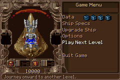

為什麼按一下就卡
早期 Game Menu 會在每次進入、游標移動或上下層切換時，重新從 stock PIC/SHP 解碼、組合 320×200 source page、縮放到 240×160，再把文字畫進 bitmap。CPU 在同一輪做完所有工作，Maxmod 沒有足夠時間更新。
三種內容，三種策略
完全靜態
Chrome、設定頁與固定 panel 在 build-time 從原版資料準備為 Mode 4 page／rows，runtime 線性複製。
狀態依賴
船體、裝備、金錢依 HDT 與 player state 組合；完成後放進 19.2 KiB EWRAM ship-panel cache。
持續動態
Next Level 旋轉星球用硬體 OBJ；文字在最終 240×160 座標獨立畫，避免跟著背景縮糊。
通用 source stamp catalog
Upgrade Ship 的裝備圖不能把每個組合都烘成完整頁面。build 端因此產生 15,525 個 stock source stamps，涵蓋必要 tyrian.shp、Sprite2 banks 與 4/5 scale 的 25 個 sub-pixel phase。runtime 仍由原版資料 ID 決定圖形， 只是不再做 RLE 與逐像素 resize。
轉場不是一次 function call
新頁面在 scratch page 分階段準備：每次最多 80 rows page copy、60 rows
panel、單一 Next Level 選項或單一 Upgrade row。舊畫面保持可見，
mmFrame() 每個 VBlank 都會執行；只有最後才排程一次 Mode 4
page flip。
Quit Game 對話框再細分成背景 capture、shade、overlay 與 choices。 取消時直接還原 cache，不重新建構 Game Menu。
960 次壓力轉場
八條已開放雙向路徑各做 120 次，共 960 次。原始完整矩陣以 High／Normal 驗證，結果為 0 missed VBlank、0 runtime SHP、 0 runtime Sprite2、music active；最大單 phase 118,465 cycles，低於 180,000-cycle 回歸門檻。v89 LOW 正式版沿用相同、與 detail 無關的管線。
